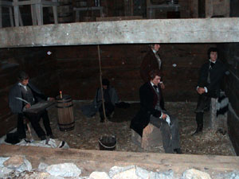
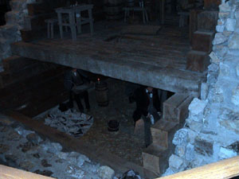
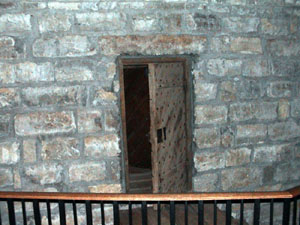

| Monday, July 21, 2003 | |
| 6:12 am 227444 |
Packed up and on the road again. Good morning pack up. It only took us 40 minutes to leave from the time the parents woke up. We will eat breakfast later. |
| 6:33 am 227459 |
Welcome to Iowa, The Hawkeye State |
| 6:40 am 227462 |
Welcome to Missouri, The Show Me State |
| 7:23 am 227501 |
Gas Stop |
| 7:42 am 227501 |
On the road again. |
| 9:20 am ? 227579 |
 Pit stop. We stopped at a rest area in Missouri for a bathroom break. Fletcher noticed that there was transmission fluid bubbling out the front seal (Maybe that would have something to do with the trouble we were having with the rolling hills. The van just couldn't make it going uphill.) |
| 9:40 am 227579 |
We didn't lose very much fluid, so we are back on the road again. |
| 11:45 227674 |
 Stopped at Liberty Jail, in Liberty Missouri. |
| 12:52 pm 227674 |
Leaving to find a place to eat. |
| 1:21 pm 227690 |
Welcome to Kansas |
| 1:40 pm 227703 |

Stop for lunch at Kansas Traveler Info Center, "Pit Stop" for race track.
A quick check of the transmission fluid says we are okay, but the van won't do anything over 55 mph. |
| 2:28 pm 227703 |
Leaving after lunch. |
| 3:00 pm ? |
Fletcher exits the toll road at Lawrence, Kansas because the van just isn't working properly and he feels that it would not be wise to continue traveling. We find a library in Lawrence to browse the internet for a new vehicle. We find 4 or 5 vans in the area that might work for our family. We are going to find a campground and unhook the camper so that we might have better luck driving around looking at new vans. |
| 4:54 pm |
Checked in to a KOA Kampground in Lawrence, KS. Transmission is going. We need a new van. |
| Not wanting to lose any time for looking at new vans we just drop off the camper at the KOA and
proceed to look at vans. We stop and look at a couple in Lawrence, but they are custom vans, which
don't really suite our purposes. We then drive back toward Kansas City to look at a 15 passenger
van.
The drive to Olathe (Suburb of Kansas City) is just as bad as the drive all day. The van just doesn't want to go. I hope we make it there. We end up driving a 2002 Ford 15 passenger van and it probably fits our needs the best. We had also been talking with Marie's Dad about Bruce's Ford Excursion (I think it was a 1999). He is trying to sell it and Marie's Dad is willing to drive it out to us. So at this point, we have two choices, a 15 passenger van (like we are used to, nothing fancy, it just works) or a Ford Excursion (that only seats 8 people, and we are used to a lot of space). We head back to the campground to discuss the options and pick up dinner along the way. The van is having real trouble making it back. I hope we don't get stranded now. |
|
| 9:30 pm ? |
While having dinner at McDonald's we decide the 15 passenger van it the best option. It is what we are used to, and the dealer is willing to take the current van in trade. |
| << Previous | Next >> |
{kind=link}
{kind=link}
{kind=link}